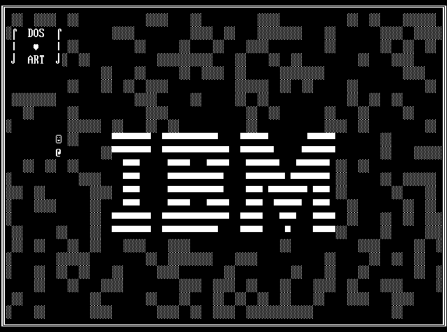

Fonts provide a good way of constructing binary images easily and with a minimum of programming effort. The original IMB PC did not have a graphics adpater. Therefore the character set was constructed to allow for simple graphics to be constructed. Code page 437 contained the font data. The font was 8 by 19, which made for easy readability.
The main challenge in using bitmapped fonts is getting the font into the machine in a way that is both easily machine readable and easily human-readable. Then a rasteriser is trivial to write. Plenty of fonts are available on net, sometimes as images, sometimes as Microsoft .fon files, sometimes as X style .bdf files. I've decided to provide the data as ASCII strings. This uses one byte per pixel as storage, but it has the advantage that if you want to change a few characters in the font you can simply edit the file. I've also provided a list of #defines for the code page 437 symbols. Surprisingly, there don't seem to be any standard names. This saves you from remembering the code for every single box-drawing character.
Though 8x19 fonts are more readable, they've got two problems. Firstly most images are a multiple of eight in both dimensions. Secondly, the cells are not square, which means that it's harder to produce non-distorted graphics. So there's also an 8x8 font. A similar font was provided in the original CGA adapter.
Now is time for a trip down nostalgia road. Of course with a modern system it is not necessary to confine the characters to a raster, but doing so retains the the original DOS feel.

Here's a DOS image I created with the drawing functions. The IBM font is very good at drawing boxes. For anything else you've got to be creative.
A good resource for IBM-compatible fonts is the Dwarf fortress tileset repository